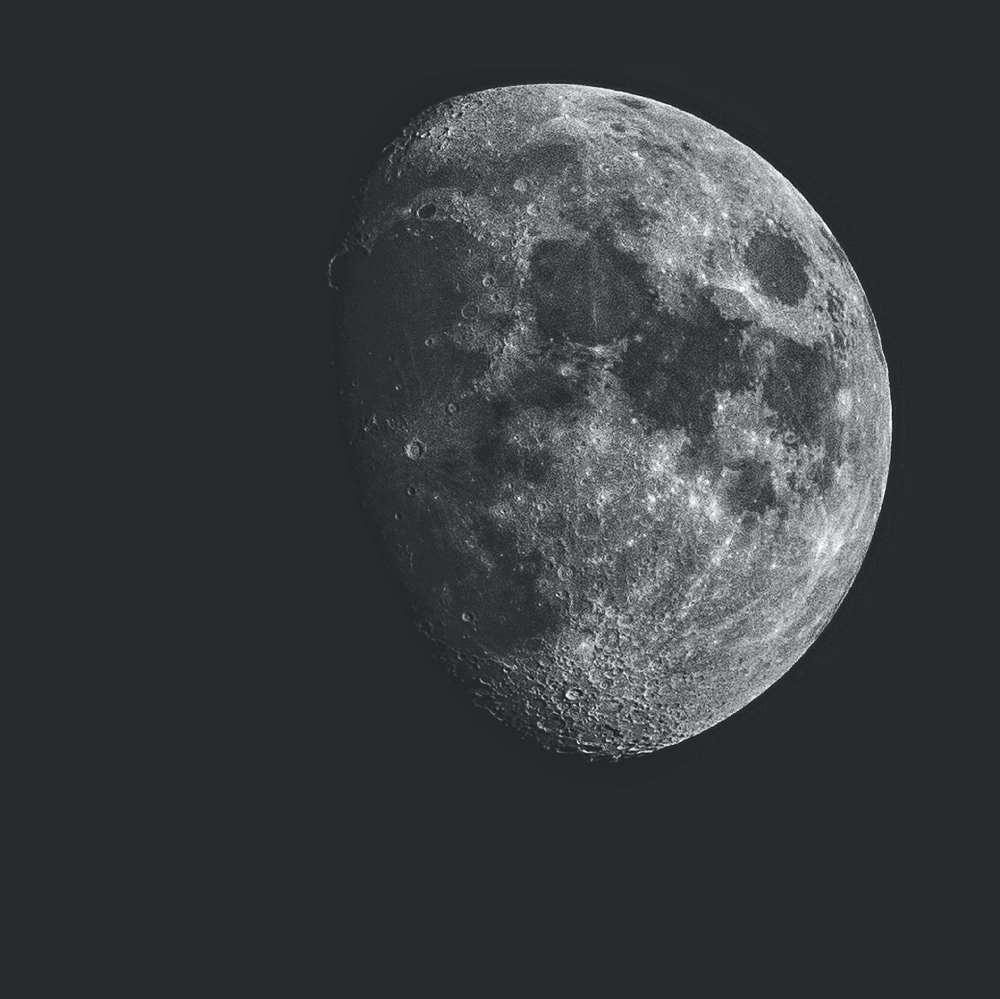
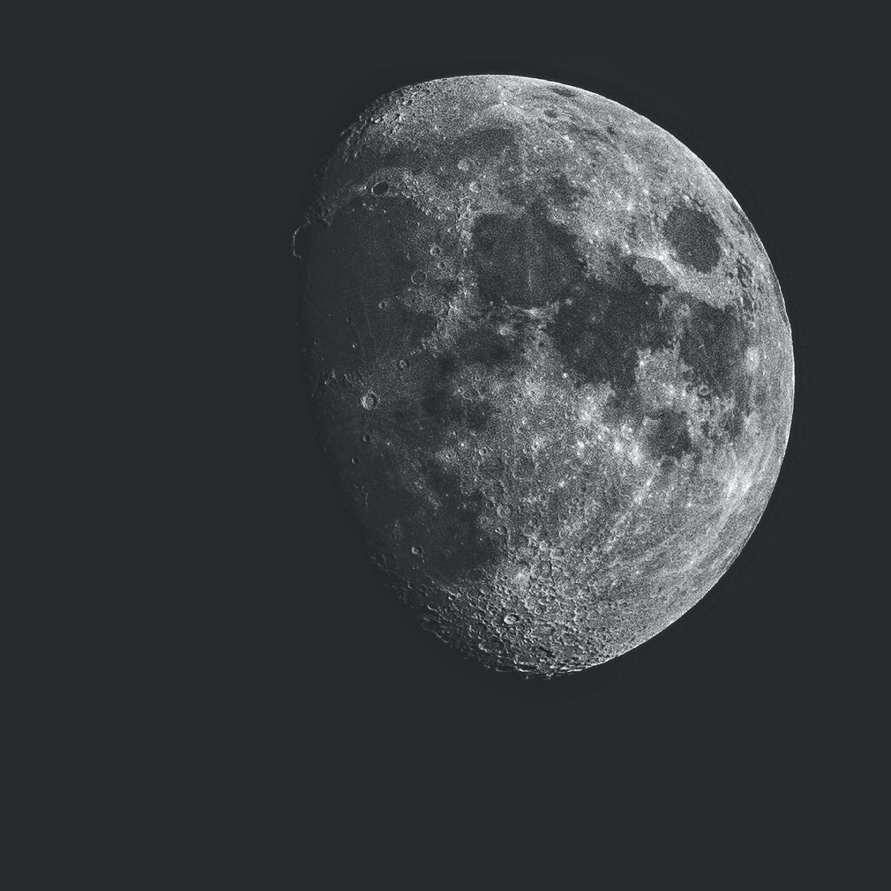

INDEX
1
About Us
수년동안 달은 조금씩 지구와 가까워졌습니다. 조석간만의 차가 심해지고 달의 중력으로 인해 지구의 중력이 약해졌습니다.결과적으로 우리는 심각한 기상이변을 맞이했습니다.
지금 이 순간에도 달은 지구에 가까워지고 있고 조금씩 쪼개지고 있습니다. 이는 계속해서 소행성을 만들어내 육지 바다, 모든 곳에 문명의 존속이 위험해질 정도의 피해를 주고 있습니다. 해일이 발생하고, 지진, 화산폭발, 먼지바람, 토네이도 등이 발생했고 생물들은 멸종위기를 맞았습니다. 인류는 더 이상 기존의 나약한 신체로는 생존이 어려워졌습니다.
Planet-92는 새로운 사회입니다. 무능력한 미개조인간은 전부 사라지고 우월한 우리들만 남았습니다. 지능은 기존의 인간에 비해 500% 상향됐고, 돔을 지어 우리 사회를 외부의 위협으로부터 지켜내고 있습니다.

지금 이 순간에도 달은 지구에 가까워지고 있고 조금씩 쪼개지고 있습니다. 이는 계속해서 소행성을 만들어내 육지 바다, 모든 곳에 문명의 존속이 위험해질 정도의 피해를 주고 있습니다. 해일이 발생하고, 지진, 화산폭발, 먼지바람, 토네이도 등이 발생했고 생물들은 멸종위기를 맞았습니다. 인류는 더 이상 기존의 나약한 신체로는 생존이 어려워졌습니다.
Planet-92는 새로운 사회입니다. 무능력한 미개조인간은 전부 사라지고 우월한 우리들만 남았습니다. 지능은 기존의 인간에 비해 500% 상향됐고, 돔을 지어 우리 사회를 외부의 위협으로부터 지켜내고 있습니다.


2
Organization Chart
3
History
4
Policies
5
How it works
6
Culture Info